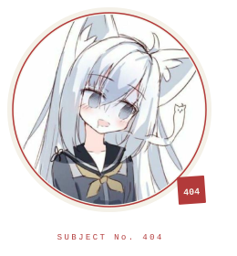

Systems engineer, mostly Rust. I work on the boundary between hardware, the kernel, and things that were never meant to be automated.
Currently building MixumART, a Rust runtime for AI agents.
English for work. 中文用來吐槽。
GENDER — ATTACK HELICOPTER (GROUNDED). 性別武裝直升機，但目前停飛——GitHub 只讓我選「其他」。
NOW — building MixumART · soldering something with too many wires · obeying false
I solder MCUs, sensors, and other things that were never meant to be connected to a computer. Not systematic. Not certified. Still running.
不是電子工程師，只是手比較癢。
bill of materials / 部品表
TECH STACK / REV. 2026.10
| REF | PART | NOTES |
|---|---|---|
| U1 | Rust | primary language |
| U2 | C | when Rust is too polite |
| U3 | Python | glue and scripts |
| U4 | TypeScript | when it has to run in a browser |
| R1 | Linux | host environment |
| R2 | Docker | containment |
| C1 | STM32 / ESP32 | small things that blink |
| C2 | KiCad / PCB | custom boards |
| TP1 | Oscilloscope | trust issues |
缺料是常態。